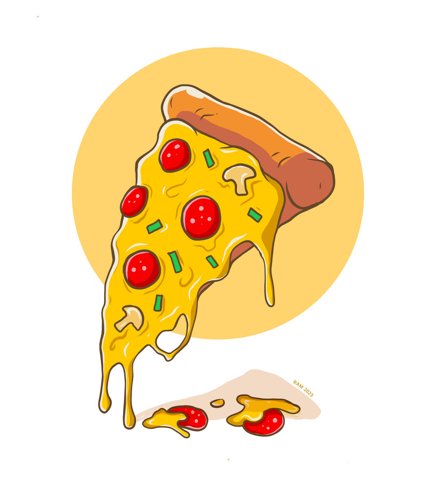

Return
-
Pizza

Description
Pizza, dish of Italian origin
consisting of a flattened disk of
bread dough topped with some
combination of olive oil, oregano,
tomato, olives, mozzarella or other
cheese, and many other ingredients,
baked quickly—usually, in a
commercial setting, using a
wood-fired oven heated to a
very high temperature—and served hot.
-
Ingredients
- 1 1/2 cups (355 ml) warm water (105°F-115°F)
- 1 package (2 1/4 teaspoons) active dry yeast
- 3 3/4 cups (490g) bread flour
- 2 tablespoons extra virgin olive oil (omit if cooking pizza in a wood-fired pizza oven)
- 2 teaspoons kosher salt
- 1 teaspoon sugar
-
Steps
- Proof the yeast
- Make and knead the pizza dough
- Let the dough rise
- Preheat the pizza stone (or pizza pan or baking sheet)
- Divide the dough into 2 balls
- Prep the toppings
- Flatten the dough ball, and stretch out into a round
- Brush the dough top with olive oil
- Sprinkle the pizza peel with cornmeal, put flattened dough on top
- Spread with tomato sauce and sprinkle with toppings
- Slide pizza into the oven
- Bake